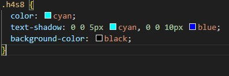

A propriedade text-shadow adiciona uma ou mais sombras ao texto. Quando usamos cores vivas e várias camadas de sombra, conseguimos criar um efeito de neon — aquele brilho típico de letreiros luminosos.
Sintaxe Básica :
text-shadow: deslocamentoX deslocamentoY raio-desfoque cor;
deslocamentoX → posição horizontal da sombra (positivo = direita, negativo = esquerda).
deslocamentoY → posição vertical da sombra (positivo = baixo, negativo = cima).
raio-desfoque → define o quão espalhada será a sombra (quanto maior, mais suave).
cor → cor da sombra.

importante avisar que o fundo preto foi um comando adcional para que fosse melhor de perceber